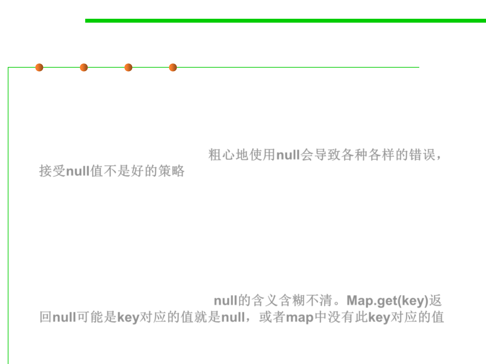

From Guava (by Google)
3.1 Data Type and Type Checking
▪ “Careless use of null can cause a staggering variety of bugs. Studying
the Google code base, we found that something like 95% of
collections weren’t supposed to have any null values in them, and
having those fail fast rather than silently accept null would have
been helpful to developers.”粗心地使用null会导致各种各样的错误，
接受null值不是好的策略
▪ “Additionally, null is unpleasantly ambiguous. It’s rarely obvious
what a null return value is supposed to mean — for example,
Map.get(key) can return null either because the value in the map is
null , or the value is not in the map. Null can mean failure, can mean
success, can mean almost anything. Using something other than null
makes your meaning clear .” null的含义含糊不清。Map.get(key)返
回null可能是key对应的值就是null，或者map中没有此key对应的值